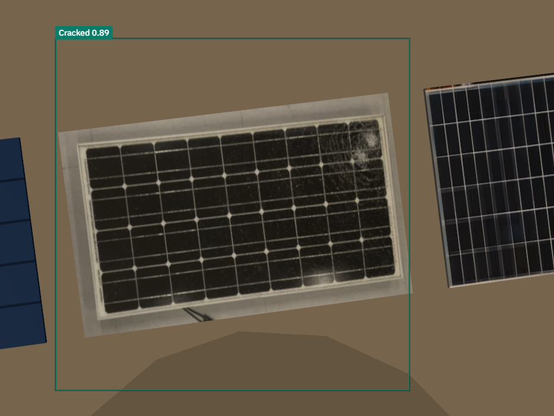
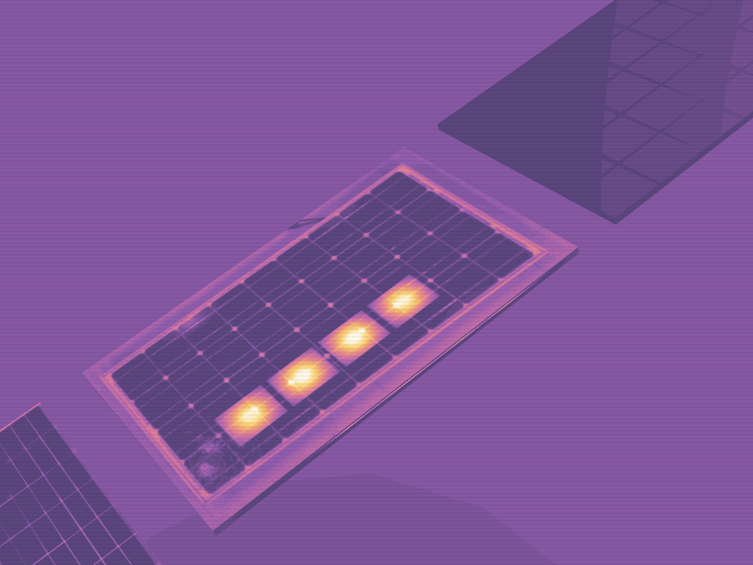

The plan, not the picture. An AI agent that watches a 500 MW block of Bhadla Solar Park, sends a drone to verify what telemetry cannot, and hands the operator a ranked repair plan with a computed deadline. A person approves it before anything is scheduled.
THE PROBLEM
A utility-scale solar plant knows when its output falls. Its monitoring (SCADA) reports that an inverter or a string is short, but not which module, whether it is dirt or damage, or how urgent it is. So someone drives out to look, or the fault waits for the next aerial infrared survey, and that survey is usually flown once a year.
Annualthe usual cadence of aerial infrared inspection at utility-scale PV [1]
Weeks to monthshow long faults below the inverter go undetected between surveys [1]
−41.7 %one cracked array in our model: 3.07 MWh and ₹7,509 lost over 72 h if nobody acts
Existing gaps. Drone and AI inspection platforms (Raptor Maps, Zeitview, Sitemark) already do thermal imaging with AI defect classification, and are building 3D twins. What they hand over is a report of defects: no deadline, no crew plan, and no re-plan when conditions change. We do not claim the twin or the detection as new.
Who benefits. Plant operators and O&M crews, asset owners, and the grid off-taker who is owed the energy.
THE SOLUTION
One closed loop, from a telemetry anomaly to an approved work order. Seven steps run unattended; the eighth is a person.
Telemetry anomaly
Agent triage
Drone dispatch
Evidence capture
Vision analysis
Prognosis and deadline
Ranked plan
Human approval
Watches every array against a physics model (NREL PVWatts [2]) of what it should produce in the current sun and heat.
Sends a drone only when imaging adds something. A soiled array gets a wash crew and no flight.
Reads the drone's frames with a detector we trained: YOLOv8n on 921 labelled photographs, Cracked AP@50 0.995 on the held-out test split. It runs in the browser, and returned Cracked 0.89 on the drone's own frame of array B-17.
Computes a deadline, "act before 14:00", from the defect, its mechanism and the 72 h forecast.
Ranks the work by a fixed formula shown on screen (loss × severity × urgency ÷ access), and plans the crew day with an exact solver (HiGHS) capped at 50 ms.
Re-derives the plan live. Drag a dust storm onto the field and the queue, the deadlines and the crew day are worked out again, in 31 to 40 ms, with the cost in rupees.

The detector's box on the frame the drone's camera returned.

The thermal pass. A rendering of the simulated scene.
Why it is different. Others detect and report. This hands over a computed deadline, a plan that re-derives when conditions change, the arithmetic behind every number, and a human gate.
WHAT IS BUILT, MEASURED
What
Result
Automated tests
453 passing, on every build
3D twin of 120 arrays
60.1 fps in Chrome
Hazard drop to re-planned frame
31 to 40 ms (budget 150 ms)
Crew-plan solve, the site's own days
10.8 ms
Next.js, React, TypeScript, three.js, ONNX Runtime Web, HiGHS in WebAssembly. One server call, to a language model (openai/gpt-oss-120b on Groq) that writes words and never numbers.
IMPACT, WITH ITS WORKING
Lost energy is priced at ₹2.446/kWh: (200 MW × ₹2.44 + 300 MW × ₹2.45) ÷ 500 MW, the two SECI Bhadla Phase-III lots blended by capacity [3]. One cracked array loses 3.07 MWh, ₹7,509, over 72 h. Left 30 days at 1.01 MWh a day it is ₹74,114: an illustration that assumes a constant loss, not a measurement.
More of the installed clean capacity delivered; crews kept out of the field above 40 °C; no drone flown where imaging adds nothing.
What is real and what is not. The detector is trained and measured, and the thermal evidence for array B-17 is measured from a real UAV frame (Raptor Maps' open dataset [4]). Telemetry for the 120 arrays is simulated on a published PV model with stated coefficients, and the drone flight is a 3D simulation. Hazard strengths, crew hours and the forecast band are declared assumptions, labelled on screen. A thermal classifier is in progress: no model is trained and no result is claimed. Nothing is connected to a real plant yet. No deviation settlement charge is computed.